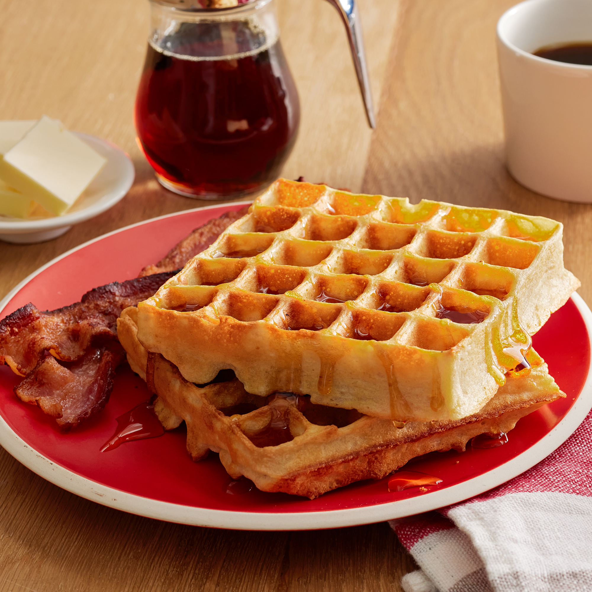

Thick Waffles
'
Description
This is a recipe for wonderful waffles to make with the family.
Ingredients
-
2 eggs
-
2 cups all-purpose flour
-
1 3/4 cups milk
-
1.5 cup vegetable oil
-
1 tablespoon white sugar
-
4 teaspoons baking powder
-
1/4 teaspoon salt
-
1/2 teaspoon vanilla extract
Steps
-
Preheat waffle iron.
Beat eggs in large bowl with hand beater until fluffy.
Beat in flour, milk, vegetable oil, sugar, baking powder, salt and vanilla, just until smooth.
-
Spray preheated waffle iron with non-stick cooking spray.
Pour mix onto hot waffle iron.
Cook until golden brown.
Serve hot.